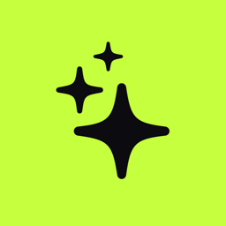
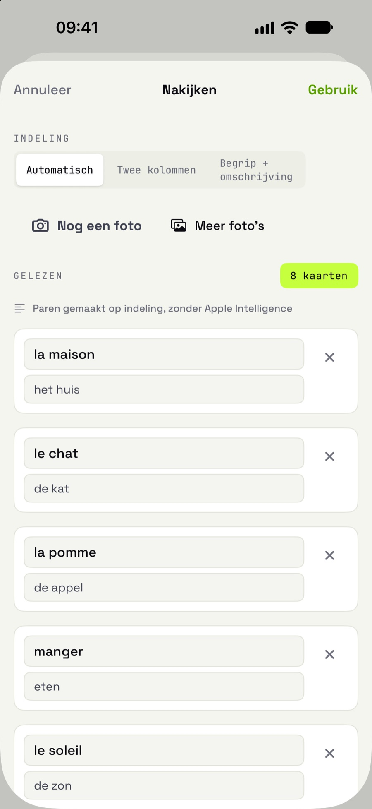
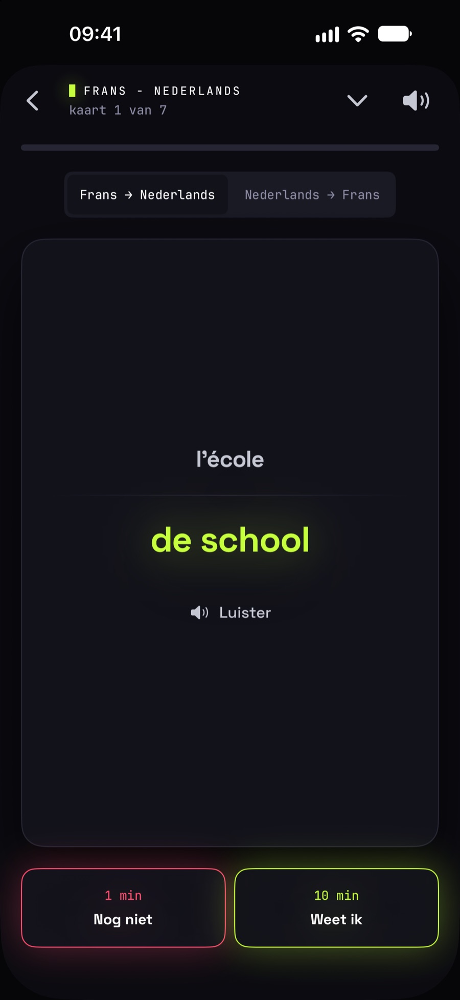
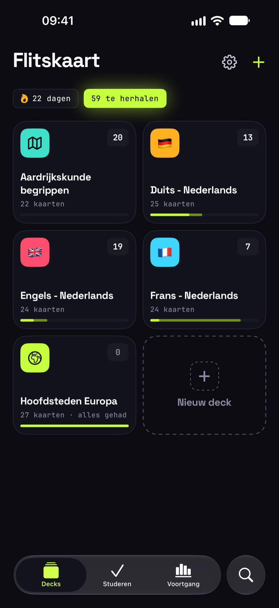
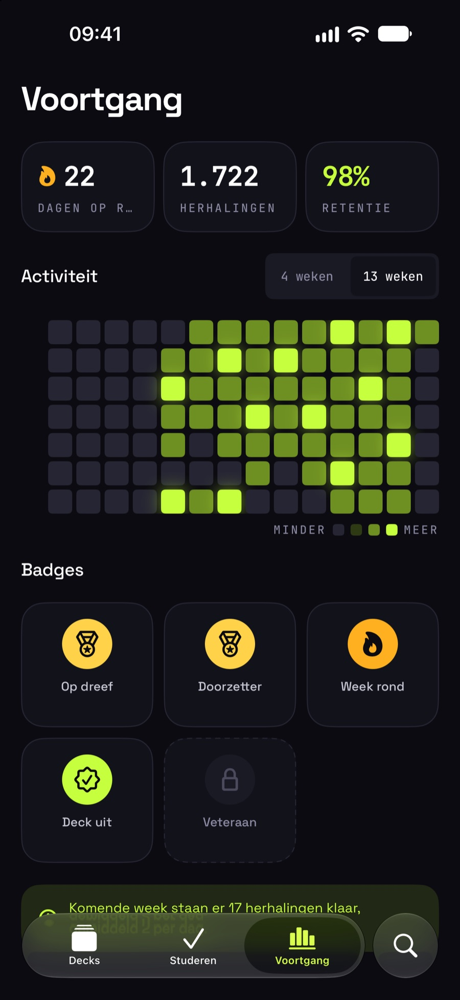
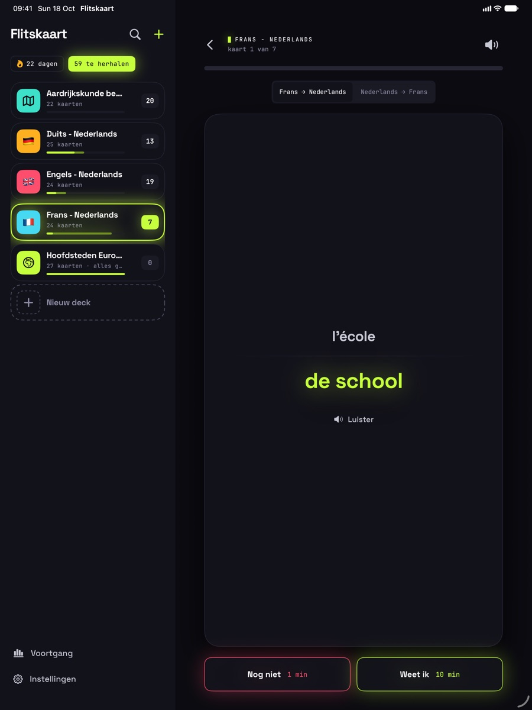
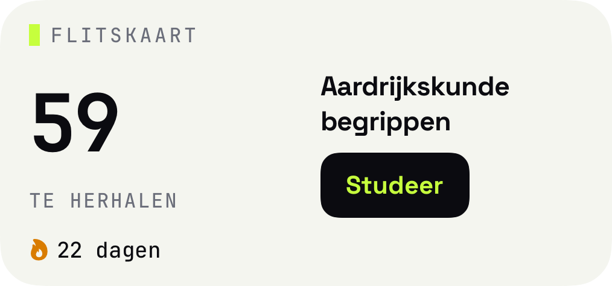

Studeren
Sleep, draai, onthoud.
Veeg naar rechts als je het weet, naar links als je het nog niet weet. Tijdens het slepen klapt de kaart al open. Elke kaart wordt voorgelezen in de stem die jij per taal kiest.

Flitskaart DownloadFlashcards voor iPhone en iPad
Fotografeer je woordenlijst, herhaal precies op het moment dat je het bijna vergeet, en zie je streak elke dag groeien.
01 · Foto naar kaarten
Richt je camera op de lijst uit je schoolboek. Flitskaart leest de woorden, herkent de twee kolommen en maakt er kaarten van. Ook regels die over twee lijnen lopen. Alles op je toestel, niets gaat naar een server.

02 · Slim herhalen
Je geheugen zakt weg volgens een voorspelbare curve. Flitskaart plant elke kaart opnieuw in op het moment dat je hem bijna kwijt bent. Weet je hem, dan schuift hij verder op. Zo kost onthouden steeds minder tijd.
Studeren
Veeg naar rechts als je het weet, naar links als je het nog niet weet. Tijdens het slepen klapt de kaart al open. Elke kaart wordt voorgelezen in de stem die jij per taal kiest.
Decks
Woord en vertaling, of begrip en omschrijving. Zet een toetsdatum op een deck en Flitskaart rekent uit hoeveel nieuwe kaarten per dag je nodig hebt.
Voortgang
Een heatmap van je activiteit, je streak, je retentie en badges die je verdient door door te zetten. Klein genoeg om dagelijks te doen, groot genoeg om trots op te zijn.



03 · Voortgang
En verder
Zijbalk, grote kaarten en Stage Manager. Je decks synchroniseren via iCloud tussen al je toestellen.

Voorlezen met de beste stem op je toestel. Kies per taal je favoriet.
Zet een toetsdatum en zie hoeveel je per dag moet doen.

Je herhalingen en streak op je beginscherm. Eén tik en je studeert.
Geen account, geen advertenties, geen tracking. Je kaarten staan op je toestel en in jouw iCloud.
Flitskaart komt binnenkort naar de App Store, voor iPhone en iPad. Wil je nu al meedoen met de bèta via TestFlight?